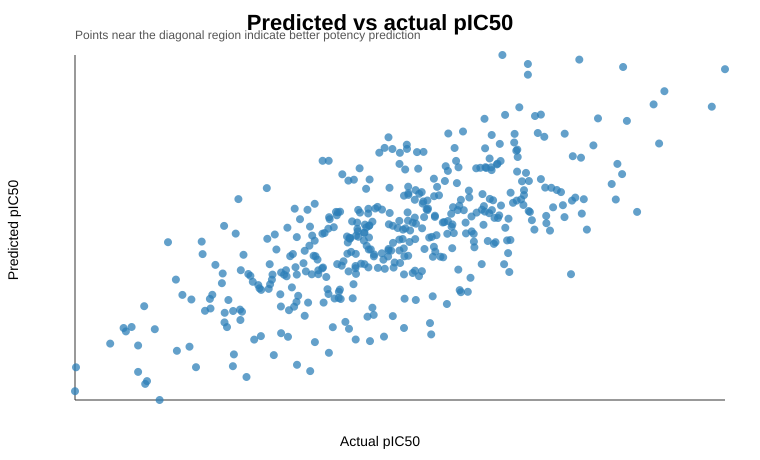

Bench to Bytes portfolio analysis report. Uses only public or synthetic data.
Interpretable molecular descriptors should explain a meaningful share of compound potency variance.
Synthetic public-safe compound activity table inspired by ChEMBL and TDC bioactivity schemas; the RDKit adapter is included for real public SMILES workflows.
data/compound_activity.csvoutputs/regression_metrics.csvoutputs/predictions.csvfigures/predicted_vs_actual.svgThe descriptor baseline recovers moderate signal, showing that simple, chemically interpretable features can be useful before moving to fingerprints, graph models, or target-specific public ChEMBL data.
